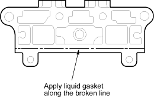
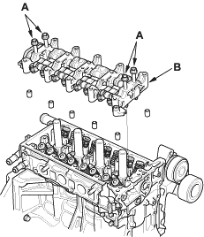
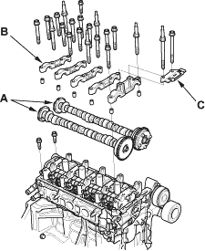
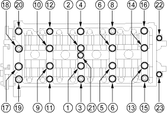

- Clean and dry the No. 5 rocker shaft holder mating surface.
- Apply liquid gasket, P/N 08C70-K0234M, 08C70-K0334M or 08C70-X0331S, evenly to the cylinder head mating surface of the No. 5 rocker shaft holder.
NOTE: Do not install the parts if 5 minutes or more have elapsed since applying liquid gasket; Instead, reapply liquid gasket after removing old residue.

- Reassembly the rocker arm assembly (see page 6-29).
- Insert the bolts (A) into the rocker shaft holder, then install the rocker arm assembly (B) on the cylinder head.


- Remove the bolts from the rocker shaft holder.
- Make sure the punch marks on the VTC actuator and exhaust camshaft sprocket are facing up, then set the camshafts (A) in the holder.

- Set the camshaft holders (B) and cam chain guide B (C) in place.
- Tighten the bolts to the specified torque.
Specified torque:
8 mm bolts: 22 Nm (2.2 kgf/m, 16 lbf/ft)
6 mm bolts: 12 Nm (1.2 kgf/m, 8.7 lbf/ft)
6 mm bolts: (21), (22), (23)
